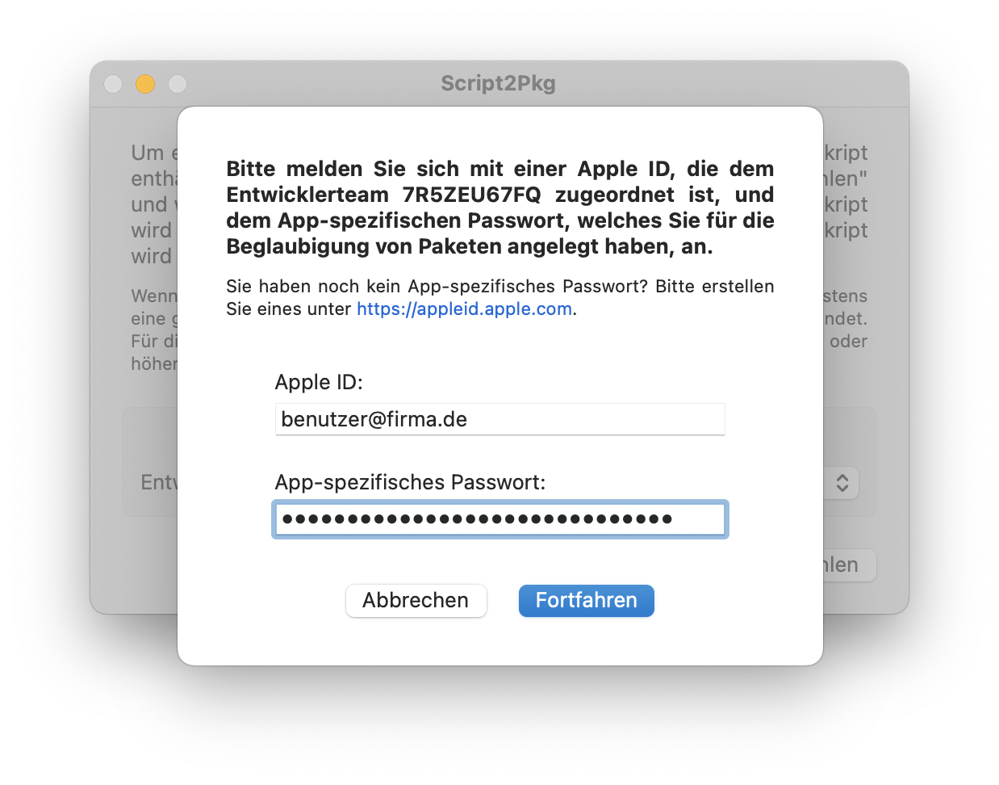

Script2Pkg
Script2Pkg
Script2Pkg
Beglaubigung von Paketen konfigurieren
Die Beglaubigung ist ein zusätzlicher Schutz davor, dass signierte Installationspakete von einer böswilligen dritten Partei verändert werden. Der Apple Notary Service ist ein automatisiertes System, das ein Installationspaket auf bösartige Inhalte untersucht und auf Probleme bei der Codesignierung prüft. Die Beglaubigung stellt also sicher, dass Apple überprüft hat, dass der signierte Code keine bösartigen Inhalte enthält. Weitere Informationen zu Beglaubigung von Paketen finden Sie im Glossar .
Um Pakete beglaubigen zu lassen, benötigen Sie ein App-spezifisches Passwort für eine Apple ID, die einem Apple Entwickleraccount zugeordnet ist. Das kann zum Beispiel derselbe Account sein, auf den das Developer ID Installer Zertifikat ausgestellt ist. Weitere Informationen finden Sie auf der Apple Webseite unter: Customizing the notarization workflow (speziell der Bereich Upload your app to the notarization service ).
Für Informationen zur Erstellung App-spezifischer Passwörter, benutzen Sie bitte folgende Dokumentation von Apple: Sign in to apps with your Apple ID using app-specific passwords
Um Pakete beglaubigen lassen zu können, müssen Sie zuerst die Signierung von Paketen konfigurieren: Signierung von Paketen konfigurieren
Sobald Sie die Signierung konfiguriert haben und über ein App-spezifisches Passwort verfügen, gehen Sie bitte wie folgt vor, um die Beglaubigung von Paketen zu konfigurieren:
1. Starten Sie die Anwendung .

2. Aktivieren Sie die Option Pakete signieren .

3. Aktivieren Sie die Option Pakete beglaubigen . Sie werden nun aufgefordert, die Apple ID Ihres Entwickleraccounts und das App-spezifische Passwort, welches Sie für diesen Account angelegt haben, einzugeben.

4. Sobald die Zugangsdaten erfolgreich überprüft wurden, wird die Option Pakete beglaubigen aktiviert.

Standardeinstellung wiederherstellen
Um die Standardeinstellung wiederherzustellen, folgen Sie bitte dieser Anleitung: Zugangsdaten für Beglaubigung verwerfen